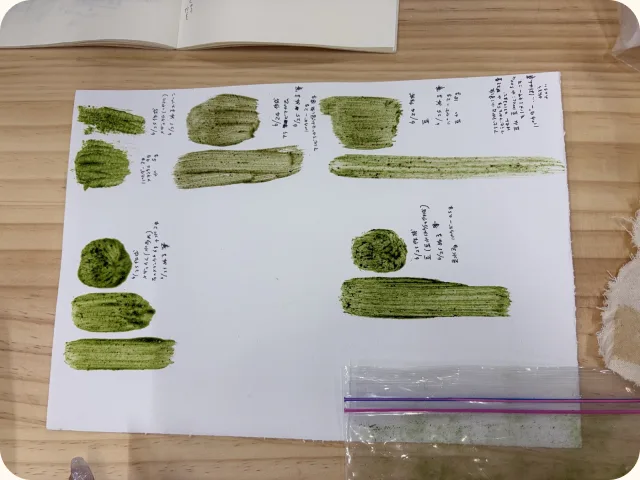
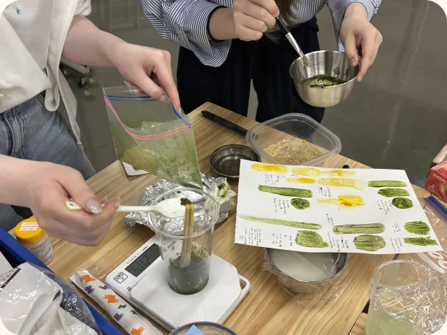
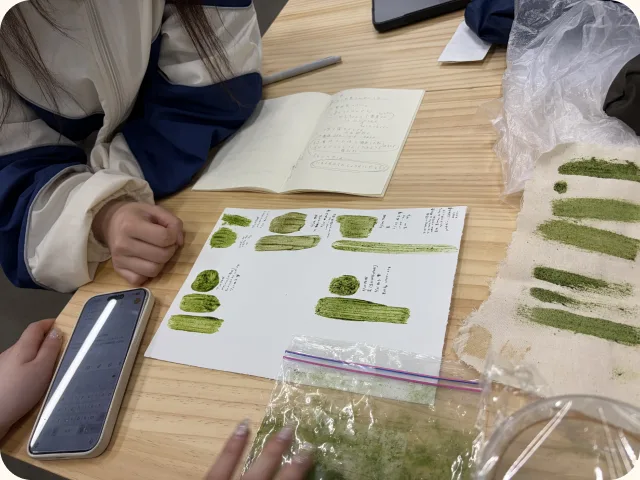
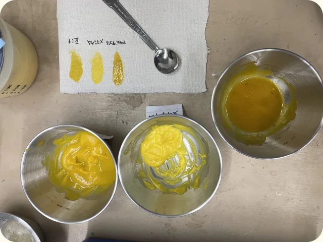
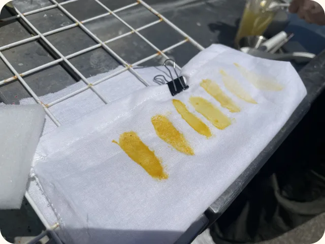
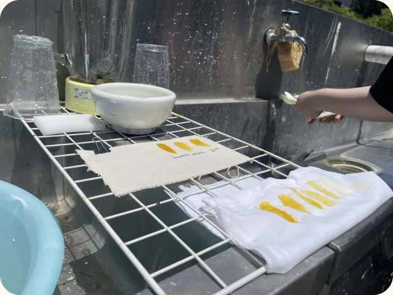
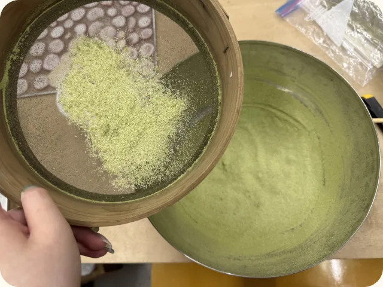

野菜を洗って薄切りにし、乾燥させてからハイスピードミルで粉砕してパウダーに。
パウダーに結着剤（アラビアゴム・メディウム・豆汁）を加え、
紙や布に塗って、発色・伸び・乾燥後の状態を確認しました。
02
研究の記録
試作実験１ 6/22–25





試作実験２ 7/9–16
かぼちゃパウダーで、太陽光・ドライヤー・室内の自然乾燥による違いを比べました。
ブルーベリーに含まれているアントシアニンは、pH値によって色が変化する性質を持っています。
赤紫蘇のパウダーは、クエン酸（酸性）を入れると赤く、重曹（アルカリ性）を入れると緑色になりました。






試作実験 8/3


